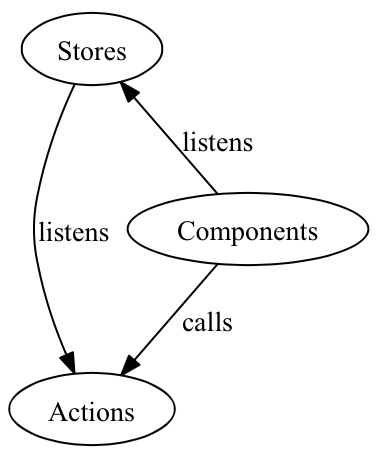

Flustered with Flux
Recently I've been trying to wrap my brain around using the Flux architecture in a React.js app. I watched the vids, read the blogs, went through Egghead's excellent tutorial series on the subject, but still didn't feel entirely comfortable.
One of the big wins of React for me was how easy it was to grasp. Understand the difference between properties and state, and BOOM - you're done. While with Angular, for example, you have to grokk all of this before you can even get started.
Flux goes a long way to destroy the React advantage, as it comes with a high cognitive price tag much like Angular et al. Here's Facebook's picture to explain the Flux way:

Maybe I'm not the sharpest bulb in the box, but this diagram just doesn't speak to me!
Discovering Reflux
Looking for options I came across Reflux by Mikael Brassman a.k.a. Spoike, and was immediately smitten! Reflux takes the Flux approach and streamlines it, making it both easier to work with and easier to grasp.
The official docs and a quick perusal of the Reflux implementation of the TodoMVC app was a great primer, as there really isn't much to it. Still I wanted to explore the difference with regards to Flux more concretely!
Flux VS Reflux
While following along with Egghead's tutorial I had just built a small Flux app, so I decided to Refluxify it and see what happened. And it really felt like a big win! The code was shorter, the modules fewer and the couplings easier to track.
Granted, I don't know if Egghead's code is the best possible example of Flux architecture, but I feel most of their stuff has a very high level of quality so it should be somewhat representative.
Either way I thought the switch-out was interesting, and will be walking through it below.
Comparing dependencies
First off, using Reflux means requiring the Reflux library, installable by npm as usual. Flux is pitched as an architecture and not a library, but you need the Dispatcher which you then adapt to your app.
Thus the net effect is really that in the Reflux version I change out Dispatcher for Reflux.
Comparing component calling actions
For components calling actions, the code is completely identical. Here's a button increasing the quoty for an item in the shopping cart.
var Increase = React.createClass({
handleClick:function(){
appActions.increaseItem(this.props.index);
},
// rest redacted
});The Flux and Reflux versions are exactly the same, apart from requiring different versions of appActions. All they do is call the relevant action function, in this case with an index as data.
Comparing component listening to store changes
Now let's compare components who are listening to changes from a store, where there are slight differences between Flux and Reflux. First the Flux version:
var Cart = React.createClass({
componentDidMount:function(){
appStore.addChangeListener(this._onStuffChange)
},
// rest redacted
});In componentDidMount we add a change listener, which then takes care of the rest.
Now for the Reflux version:
var Cart = React.createClass({
mixins: [Reflux.ListenerMixin],
componentDidMount: function() {
this.listenTo(appStore, this._onStuffChange);
},
// rest redacted
});The versions are still very similar. The Reflux version uses a ListenerMixin which supplies a .listenTo method, which is called in componentDidMount with the store as an argument. Other than that the code is the same as for the Flux version.
Comparing stores
Now for the interesting stuff! Below is the code for the Flux store.
var appStore = merge(EventEmitter.prototype, {
emitChange:function(){
this.emit(CHANGE_EVENT)
},
addChangeListener:function(callback){
//this.on(CHANGE_EVENT, callback)
this.addListener(CHANGE_EVENT, callback)
},
removeChangeListener:function(callback){
this.removeListener(CHANGE_EVENT, callback)
},
dispatcherIndex:AppDispatcher.register(function(payload){
var action = payload.action;
switch(action.actionType){
case AppConstants.ADD_ITEM:
_addItem(payload.action.item);
break;
case AppConstants.REMOVE_ITEM:
_removeItem(payload.action.index);
break;
case AppConstants.INCREASE_ITEM:
_increaseItem(payload.action.index);
break;
case AppConstants.DECREASE_ITEM:
_decreaseItem(payload.action.index);
break;
}
appStore.emitChange();
return true;
}),
// rest redacted
);And here's the corresponding Reflux store:
Reflux.createStore({
init: function() {
this.listenTo(actions.addItem,_addItem);
this.listenTo(actions.removeItem,_removeItem);
this.listenTo(actions.increaseItem,_increaseItem);
this.listenTo(actions.decreaseItem,_decreaseItem);
},
// rest redacted
});The simpler structure of Reflux is beginning to shine!
Comparing actions
The actions in the Flux version are rather verbose:
var appActions = {
addItem:function(item){
AppDispatcher.handleViewAction({
actionType: AppConstants.ADD_ITEM,
item: item
})
},
removeItem:function(index){
AppDispatcher.handleViewAction({
actionType: AppConstants.REMOVE_ITEM,
index: index
})
},
decreaseItem:function(index){
AppDispatcher.handleViewAction({
actionType: AppConstants.DECREASE_ITEM,
index: index
})
},
increaseItem:function(index){
AppDispatcher.handleViewAction({
actionType: AppConstants.INCREASE_ITEM,
index: index
})
}
}While in Reflux they're absolutely not:
var appActions = Reflux.createActions([
"addItem",
"removeItem",
"decreaseItem",
"increaseItem"
]);Comparing AppDispatchers
Fist the Flux version:
var AppDispatcher = merge(Dispatcher.prototype, {
handleViewAction: function(action){
this.dispatch({
source: 'VIEW_ACTION',
action:action
})
}
});And now the Reflux version:
// Unicorns and rainbows!That's right - Reflux does away entirely with the concept of an app-specific dispatcher.
Wrapping up
Probably Flux proponents can find many things being not entirely fair in this comparison, but for me, changing to Reflux made me breathe easier. The code is sleek, and I have a firm grasp of how the parts are wired. Components listen to stores and call actions. Stores listen to actions and toot when they're updated. Simple as that!

I've glanced at some other Flux-inspired libraries, of which there are many. So far Reflux seems to be the most solid option, and I'm excited to follow along in its continued development!